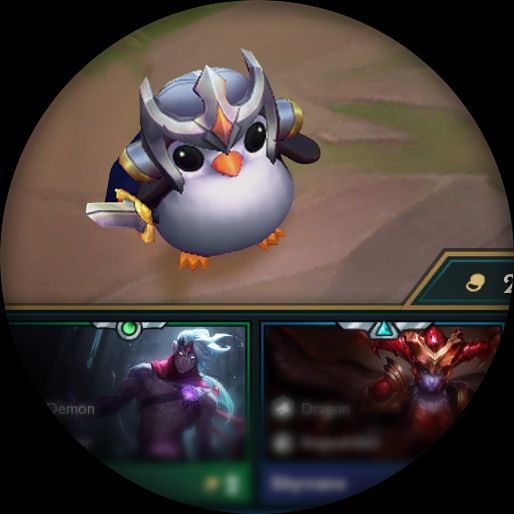
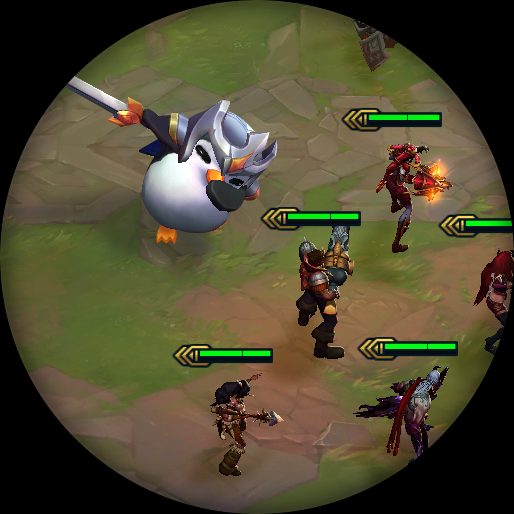
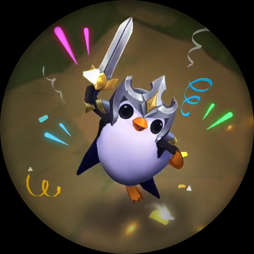
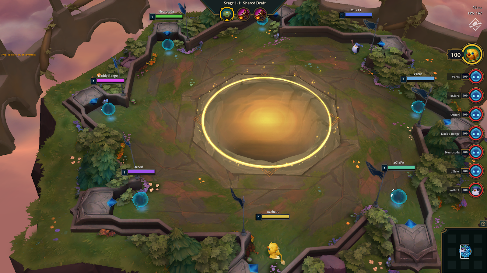

Teamfight Tactics (Tácticas Maestras en EUW) o TFT es un modo de juego de autobatallas. Fue presentado por
primera vez
el 10 de junio de 2019, comenzó a estar disponible en el PBE el 18 de junio de 2019 y fue lanzado en los
servidores en
vivo el 25-28 de junio de 2019.
Teamfight Tactics es un juego de tácticas de reclutamiento todos contra todos de 8 jugadores, en el cual el
jugador
recluta poderosos campeones, los despliega y lucha con ellos para convertirse en el último jugador en pie.
Recluta

Elige un campeón de la tienda y reclútalo con oro. Luego, arrástralo desde la banca
hasta
el campo de batalla para
desplegarlo.
Combina tres copias del mismo campeón para crear una versión de dos estrellas que será
más
poderosa.
Despliega

Los campeones tienen rasgos y obtienen efectos adicionales cuando se usan junto a otros
campeones con los mismos rasgos.
¡Las posiciones son importantes! Experimenta con diferentes distribuciones para
encontrar
los mejores resultados.
Pelea

En cada ronda, tu equipo se teletransporta a la arena de un enemigo (o viceversa). Los
campeones pelean automáticamente
y si tu equipo es derrotado, tu Mini recibirá daño.
Cuando la vida de tu Mini llegue a 0, quedarás fuera de la partida.
Cliente
Teamfight Tactics es una porción independiente del cliente, con sus propias colas normales y de
clasificatoria y sus
propias misiones e interfaz de misiones.
Partidas normales y clasificatorias
Las clasificatorias utilizan un sistema de ligas similar al de la Grieta del
Invocador y
de
El Bosque Retorcido pero sin series de promoción.
En cuanto un jugador consiga 100 PL, ascenderá y conservará todos los PL
adicionales que
tenga. Como no existe un solo
ganador o perdedor en TFT, las series de promoción no funcionarían muy bien que digamos.
En Oro o en ligas menores, los jugadores pueden entrar en cola en grupos de
hasta 5
jugadores.
En Platino y en ligas mayores, los jugadores pueden entrar en cola en grupos
de hasta 3
jugadores.
Los jugadores ganan o pierden PL basado en la posición que obtuvieron en la
partida, es
decir, ganan PL dependiendo de
cuántos jugadores quedaron en una posición más baja y pierden PL dependiendo de cuántos jugadores
quedaron en una
posición más alta.
El jugador que termine en primer lugar obtendrá muchos más PL al terminar una
partida de
TFT, ya que básicamente derrotó
a otros siete jugadores en esa partida. Por lo general los jugadores recibirán PL si terminan en cuarto
lugar o superior
y perderán PL si terminan en quinto lugar o más abajo, pero solo habrá ligeros cambios para los lugares
de en medio en
la mayoría de las partidas.
Los jugadores descienden si pierden mientras tienen 0 PL.
Los jugadores obtienen más PL por partida si todo sale muy bien y pierden más
LP por partida si todo sale muy mal.
Misiones
Las misiones se dividen en 3 categorías.
Reclamar el Orbe de Iluminación, el cual otorga 80 puntos de TFT. Se reinicia cada 22
horas.
Misiones semanales: una selección de misiones que otorgan Puntos de TFT.
Recompensas del Pase de Temporada: otorga recompensas según los Puntos que se posean. Dado
el nombre, es probable que el
Pase de Temporada cueste Riot Points.
¿Como jugar TFT?
Carrusel
Al comienzo de la partida y luego, después de 6 rondas, todos los jugadores participan en un reclutamiento
compartido,
también conocido como el carrusel. En los reclutamientos compartidos, todos son transportados al centro de
la isla de la
convergencia y pueden elegir un campeón gratuito de una única alineación aleatoria. Ese campeón viene
pre-equipado con
un objeto. Se elije al campeón que se desea corriendo hacia él con las Minileyendas, sin embargo, hay que
moverse con
cuidado, pues las Minileyendas escogen a quien sea que toquen primero y no se pueden rehacer la elección.
A medida que la partida avanza, los reclutamientos compartidos funcionan como una mecánica para que los
jugadores que
van perdiendo tengan la oportunidad tomar la delantera, pues los dos jugadores con la vida más baja hacen su
selección
primero, seguidos por los siguientes dos jugadores con la vida más baja y así sucesivamente. Se garantiza
que los
campeones tengan al menos un objeto básico y tienen una probabilidad de aparecer con un objetos avanzados
que aumenta a
medida que avanza la partida.
Si bien la estrategia general es escoger un campeón y/o un objeto que beneficie bien nuestra composición, a
veces, puede
ser más ventajoso escoger un campeón o un objeto que beneficiaría a otro jugador para frenar su progreso.
Un combate PvP tiene lugar justo después de cada ronda de carrusel. La única excepción a esto es el primer
carrusel, que
sucede justo antes de un combate PvE.

Derrotas y victorias
Los jugadores comienzan con 100 Puntos de Vida. Si el jugador llega a 0 Puntos de Vida pierde la partida. A
los
jugadores derrotados se les presenta las opciones de salir de la partida o continuar viendo, y si continúan
viendo,
pueden salir en cualquier momento sin riesgo de penalización.
Los jugadores son clasificados según el orden en el que fueron derrotados, y el último jugador que quede en
pie es
declarado ganador.